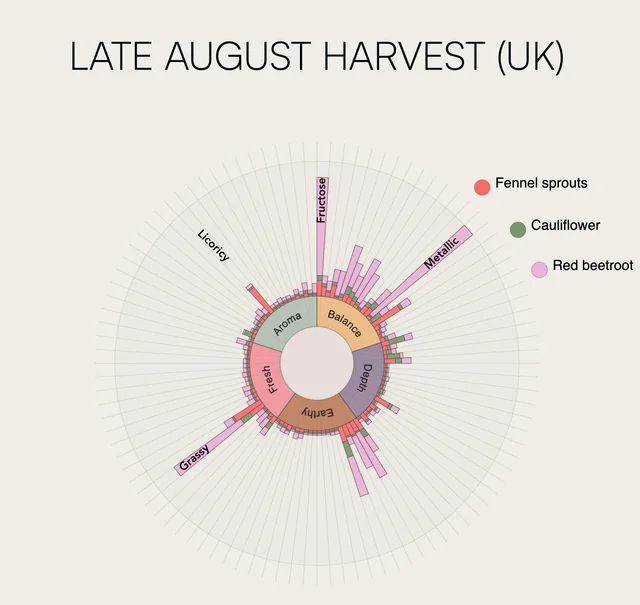

I see this visualization as a poorer example of displaying the desired content. The circular design of the information is visually appealing, but inefficient in presenting the data. The design makes it harder to read the text, having to constantly turn your head to read makes it not easy for the reader. Also, most of the bars are lower, compared to the high outliers of the larger sections. If this was displayed vertically along with numbers on the graph it can be more easily read.

I see this image as a very well-done infographic. Each bar has individual values on the top to show the specific value. There are company logos to let the common user make that immediate connection to the company. There is a statistic on the graph that is not shown as a graphic, but as an individual stat. This allows to see the statistic, but it doesn’t take away and only displays more information.